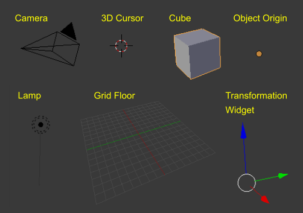

启动场景¶
在启动画面关闭后，如果没有载入其它的 blend 文件，3D视图界面将显示启动场景。仔定义启动场景可以保存为 启动文件 的一部分。

启动场景。
各个元素¶
- 立方体(Cube)
在场景中间的灰色立方体是一个 网格 物体。因为这个立方体是被选中的所以有橙色的轮廓线。
- 灯(Lamp)
- 下面有条竖线的圆圈是用来照亮立方体的光源。光详见: Blender渲染引擎, Cycles渲染引擎。
- 摄像机(Camera)
- 那个具有向上的三角形的椎体就是摄像机，用来标明渲染视图。摄像机详见：渲染引擎, Cycles渲染引擎.
- 3D游标(3D Cursor)
- 3D游标, 一个有着红色和白色圆圈的十字形，用来在场景中放置物体。
- 栅格平面(Grid Floor)
- 一个分割成灰色方格用来标记世界零高度的平面。红色和绿色的线是世界坐标轴。这些线相交于原点，也是 立方体 的位置。栅格平面在 显示面板 中设定。

启动场景中的各个元素。